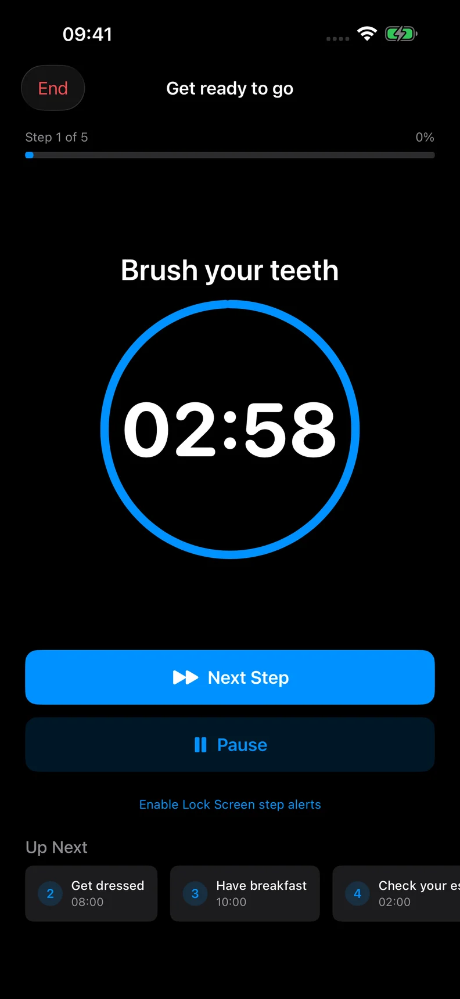

Practical guides
How to use a timer for a multi-step routine
A routine timer gives each part of a sequence its own time. Instead of looking at one countdown for the whole morning or evening, you see the step you are doing now.
Choose a sequence with a clear end
Start with something you repeat, such as getting ready to leave, preparing a workspace or winding down for the evening. Choose what “finished” means before adding steps.
For a workspace routine, that might be sitting down with your first task ready. You do not need to plan the entire working day.
Write steps that tell you what to do
Use concrete names such as “Clear the desk”, “Get water” and “Open the first task”. A title like “Be productive” does not tell you what comes next.
Keep each step small enough to recognize when you are done. If a step contains several unrelated actions, try splitting it. If the list feels fussy, combine a few steps again.
Set a duration you can change
Estimate a starting duration for each step. You could give clearing the desk three minutes, getting water two minutes and preparing the first task five minutes. That makes ten planned minutes, excluding pauses and transitions.
Try the sequence once before treating those numbers as a plan. If something takes longer, increase its duration. Shorter is not automatically better.
Start, pause and move on deliberately
In Rotinely, start your routine to see the current step and its timer. Pause when you are interrupted and resume when you want to continue. Tap Next Step when the current activity is done.
Reaching zero does not automatically start the next step. You decide when to move on, so the sequence can follow what you are actually doing. You can also end a routine early when the rest no longer fits.

Choose reminders only when useful
You can follow a routine with the app open without adding a schedule. If you want weekday reminders or spoken step guidance, those are optional Pro features.
Reminders need notification permission. Focus, Silent mode and iOS settings can affect sound and delivery. Spoken step guidance works while the app is open; do not rely on it as a guaranteed background alarm.
Review the sequence, not just the time
After using the routine, look at the order and the amount of detail. Did you need to prepare something before step one? Was a transition missing? Did a step have an unclear finish?
Change the plan to reflect those observations. A routine timer can give your sequence a visible structure without requiring every day to run on the same clock.